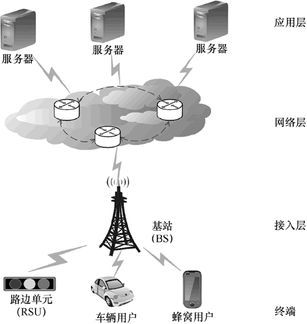
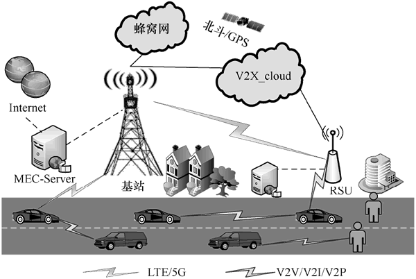

首页 > 编程笔记
C-V2X车联网技术介绍（非常详细）
近年来，随着全球化经济和科技的不断发展进步，我国城市化发展进程的不断加快，车辆交通已成为人们日常生活的一部分，汽车拥有量呈爆炸式增长。
《2018 年国民经济和社会发展统计公报》及公安部交管局公布的最新数据显示，我国民用汽车保有量约为 2.4028 亿辆，比 2017 年年末增长 10.5%。截至 2019 年 6 月底，我国汽车保有总量已经达到了 2.5 亿辆，平均千人汽车保有量已达 179.2 辆（按照 13.95 亿人口计算），首次超过了世界 170 辆的平均水平。
然而，庞大的汽车保有量导致道路交通的安全隐患也不断发生，并且由于目前交通信息化不足，也带来了一些全球性问题，如交通事故频发、城市交通拥堵、汽车排放尾气导致的环境污染等。
一方面，交通事故居高不下，给社会带来了巨大的生命和财产损失。世卫组织在 2018 年《全球道路安全现状报告》中指出，由于车辆交通导致的伤亡人数不断攀升，每年有几千万人因交通事故遭受不同程度的伤害或致残，且约有 135 万人死于道路交通碰撞事故，道路交通伤害预计将成为全世界第五大死因，交通事故造成的经济损失约占世界各国 GNP 的 1%~3%。该报告进一步显示，大约 84% 的道路交通死亡事故发生在低收入和中等收入的国家，另外在人口密集的城市中发生的事故约占 40%，造成这一状况的部分原因是交通信息传输网络能力不足导致的救援不及时。
另一方面，严重的交通拥堵除了会加剧环境污染和降低驾乘人员的旅途体验，还会因引起驾乘人员的心理烦躁而进一步增加交通事故率，从而形成恶性循环。
缓解交通拥堵、提高交通安全和交通效率已不适宜仅依靠传统的拓宽道路、建设高架、铺设轨道、设立标志等增加基础道路设施的交通工程手段，而应更加注重现代信息和车联网技术在解决交通问题中的核心作用。
因此，实现车辆交通网络的信息化、构建基于车联网的智能交通系统（Intelligent Transportation System，ITS），以及通过车辆间的相互通信来管理交通、减少交通拥堵和事故的发生、提高交通安全并为乘客提供道路信息，以达到快捷、安全、有效、舒适、绿色环保的目的，一直以来都是世界各国不懈努力的目标。 基于蜂窝网的车载通信技术（C-V2X）是 3GPP 全球标准组织的通信技术，目前包括 LTE-V2X 及技术演进后的 5G V2X。
图 1 所示为 C-V2X 车联网架构：
基于蜂窝的车联网架构主要由终端、接入层、网络层及应用层组成。首先，终端包括车辆用户、蜂窝用户及路边单元等。其次，位于接入层的基站是所有终端设备的控制节点，能够对用户的切换、资源分配、资源调度、功率控制等资源管理方面进行控制。最后，网络层负责将接收到的信息发送给应用层。应用层对数据进行处理后，根据不同的业务需求为终端提供包括出行安全保障、娱乐媒体在内的一系列服务。
V2X 作为新一代通信技术，实现 V（车辆）与任何信息交互的对象 X（主要包含人、车、道路基础设施、云平台或网络等）的协调感知和互联互通。V2X 通信通过车与车之间（Vehicle-to-Vehicle，V2V）、车与路之间（Vehicle-to-Infrastructure，V2I）、车与人之间（Vehicle-to-Pedestrian，V2P）、车与网络或云平台之间（Vehicle-to-Network，V2N）构建移动互联的环境感知和信息交互体系，从而构建出满足智能交通感知和互联特征的数据环境，实现 ITS 系统的人、机、物广泛信息互联互通与协同控制。
V2X 通信场景如图 2 所示。
因此，V2X 通信不仅可以促进 ITS 的发展和应用，还有利于创新智慧交通的新模式，对进一步减少交通拥堵、提高交通安全和交通效率及实现绿色交通具有显著意义。
与 V2X 通信相关的应用，具有高可靠性与低时延等特点。目前，支持 V2X 通信的主流技术解决方案包括基于 IEEE 802.11p 协议标准的专用短程通信（Dedicated Short Range Communication，DSRC）技术和基于蜂窝网的 V2X（Cellular Vehicle-to-Everything，C-V2X）技术（包括 LTE-V2X 和 5G+NR-V2X）。
其中，3GPP 的 C-V2X 标准化工作主要分为 3 个阶段：
下表给出了 DSRC 与 C-V2X 技术的对比差异：
以美国为主导的 DSRC 技术被认为是 V2X 车载通信的基础标准，美国联邦通信委员会给予分配的物理层有效通信带宽总共为 75MHz，其中与安全控制信道相关的带宽仅有 10MHz。
随着车辆保有量的快速增长，有限的频谱资源无法满足车载通信网络接入的高数据流量需求，并给车载安全通信带来挑战。研究结果表明，DSRC 技术在同时存在多个车载通信节点的情况下性能较差。另外，IEEE 802.11p 标准是在 IEEE 802.11a 标准的基础上进行开发扩展的，其 MAC 层采用了载波监听碰撞避免带有冲突避免的载波侦听多路访问（Carrier Sense Multiple Access with Collision Avoid，CSMA/CA）机制。然而，已有文献表明基于 DSRC 机制在车载通信节点较多时存在较大的包碰撞丢失率与接入时延，同时面临着可扩展性差、不可预测的广播风暴与隐蔽终端问题。
特别是在车联网建设初期，车载路边基础设施部署较为缺乏、车载高速移动导致车载通信网络的拓扑结构变化较快等特点使得 V2X 通信变化为间隙连通性，通信发生中断的概率较大，不能很好地满足 V2X 通信高可靠性与有效性的需求。
事实上，以我国为主导的 C-V2X 通信技术，利用现有基站通信信号广泛覆盖的特点，能很好地克服 IEEE 802.11p 标准通信模式下通信链路连通性不足的缺陷，然而传统的基于蜂窝网的 V2X 通信模式下，通信信号必须通过蜂窝基站的中继转发，如此加重了蜂窝基站的负担，并在一定程度上增加了 V2X 通信的时延。
与 DSRC 不依赖于网络基础设施服务，需增加全面部署的时间和成本不同，C-V2X 可使用现有的蜂窝网络基础设施，提供更好的安全性、更长的通信范围，以及从 4G 到 5G 甚至更高的技术进化路径。
2016 年 9 月，汽车和通信行业联合成立专门组织——5G 汽车联盟（5G Automotive Association，5GAA），是全球电信行业与汽车行业的跨行业产业联盟，旨在研究未来移动交通服务端到端的解决方案。5GAA 的 8 个创始成员分别是奥迪、宝马、戴姆勒、爱立信、华为、英特尔、诺基亚和高通，目前已经拥有 100 多家成员单位。5GAA 也与美国运输部、欧盟、中国政府等相关机构密切沟通，与欧洲汽车电信联盟（EATA）、下一代移动通信网络（NGMN）、全球 TD-LTE 发展组织（GTI）、3GPP、IMT-2020 正式开展合作工作。
根据 5GAA 的测试报告《V2X功能和性能测试报告》（V2X Functional and Performance Test Report），预计商用的 C-V2X 产品在适应安全需求的前提下，范围、可靠性等指标都明显优于 DSRC。
C-V2X 通过将人、车、路、网、云等交通参与要素有机结合，一方面为行人和骑车人等低能见度道路使用者和周围环境提供更多通信机会；另一方面支撑车辆获得比单车感知更多的信息，促进车路协同应用的大规模落地。同时，单车智能往往对传感器要求很高，实现自动驾驶成本高，而C-V2X可提供辅助手段，如RSU等设备可有效传递远距离消息，降低传感器成本。
我国政策也大力推动了 C-V2X 的发展，华为、中兴等企业已成长为世界一流的通信企业，国内企业在国际标准组织中具有较强话语权。在 V2X 的标准讨论过程中，大唐、华为先后作为 4G LTE-V2X 和 5G+NR-V2X 的报告人，深度参与标准制定。
另外，C-V2X 专利技术中国有相对优势。根据光大证券报告显示，DSRC 专利基本被美国、日本、韩国控制。其中，美国企业专利占比超过了 50%，中国的企业只有 9%；而 C-V2X 方面，由于是新兴技术，且正处于标准制定中，中国占 30% 左右，美国和欧洲也是 30% 左右，相对来说各国比较均衡。
相比 LTE-V2X，5G V2X 更能满足智能网联汽车的需求。通信技术是自动驾驶核心要素之一，汽车在运行过程中将产生巨大数据量，而当前以 4G 为代表的网络通信技术尚有较大差距。同时，车联网和自动驾驶都需要厘米级精确定位，确保安全的路径规划和稳定流畅的指令执行，4G 偶尔出现的信号不稳定或延迟，对汽车安全存在巨大隐患。
伴随 5G 时代的到来，5G 设备密度比 4G 增加 10~100 倍，传输速率高 30~50 倍，流量密度提升 1000 倍，延迟小于 1ms，加上冗余设计，其将为车联网技术、自动驾驶带来更多加速和突破，甚至给整个产业打开更多想象的空间。
2020 年 2 月，国家发展改革委、工业和信息化部等 11 个国家部委联合发布《智能汽车创新发展战略》，提出 2025 年，实现有条件自动驾驶的智能汽车达到规模化生产、高度自动驾驶的智能汽车在特定环境下市场化应用。4 月下旬，工业和信息化部发布《关于推动 5G 加快发展的通知》，点明了 5G 未来的应用场景，促进“5G+车联网”协同发展就是其中重点需要着力的方向。
另外，5G V2X 标准化也即将完成。3GPP 在 2015 年即开始了针对 C-V2X 的标准讨论。2017 年 3 月，3GPP 发布的支持 LTE-V2X 的 Rel-14 标准，是目前全球 C-V2X 商用落地的主要版本。
与 DSRC 不同的是，伴随着电信网络的演进，5G 时代的到来，其在高速率、低延时方面的优异表现为车联网技术、自动驾驶带来更多突破，4G C-V2X 也加速向 5G+C-V2X 演进。据悉，支持 5G-V2X 的 Rel-16 标准已于 2020 年 7 月发布，最后阶段的支持增强 5G-V2X 的 Rel-17 标准，预计将于 2021 年年底发布，到时整个标准工作完成，车联网将迎来大规模爆发。
《2018 年国民经济和社会发展统计公报》及公安部交管局公布的最新数据显示，我国民用汽车保有量约为 2.4028 亿辆，比 2017 年年末增长 10.5%。截至 2019 年 6 月底，我国汽车保有总量已经达到了 2.5 亿辆，平均千人汽车保有量已达 179.2 辆（按照 13.95 亿人口计算），首次超过了世界 170 辆的平均水平。
然而，庞大的汽车保有量导致道路交通的安全隐患也不断发生，并且由于目前交通信息化不足，也带来了一些全球性问题，如交通事故频发、城市交通拥堵、汽车排放尾气导致的环境污染等。
一方面，交通事故居高不下，给社会带来了巨大的生命和财产损失。世卫组织在 2018 年《全球道路安全现状报告》中指出，由于车辆交通导致的伤亡人数不断攀升，每年有几千万人因交通事故遭受不同程度的伤害或致残，且约有 135 万人死于道路交通碰撞事故，道路交通伤害预计将成为全世界第五大死因，交通事故造成的经济损失约占世界各国 GNP 的 1%~3%。该报告进一步显示，大约 84% 的道路交通死亡事故发生在低收入和中等收入的国家，另外在人口密集的城市中发生的事故约占 40%，造成这一状况的部分原因是交通信息传输网络能力不足导致的救援不及时。
另一方面，严重的交通拥堵除了会加剧环境污染和降低驾乘人员的旅途体验，还会因引起驾乘人员的心理烦躁而进一步增加交通事故率，从而形成恶性循环。
缓解交通拥堵、提高交通安全和交通效率已不适宜仅依靠传统的拓宽道路、建设高架、铺设轨道、设立标志等增加基础道路设施的交通工程手段，而应更加注重现代信息和车联网技术在解决交通问题中的核心作用。
因此，实现车辆交通网络的信息化、构建基于车联网的智能交通系统（Intelligent Transportation System，ITS），以及通过车辆间的相互通信来管理交通、减少交通拥堵和事故的发生、提高交通安全并为乘客提供道路信息，以达到快捷、安全、有效、舒适、绿色环保的目的，一直以来都是世界各国不懈努力的目标。 基于蜂窝网的车载通信技术（C-V2X）是 3GPP 全球标准组织的通信技术，目前包括 LTE-V2X 及技术演进后的 5G V2X。
图 1 所示为 C-V2X 车联网架构：

图 1 C-V2X 车联网架构
图 1 C-V2X 车联网架构
基于蜂窝的车联网架构主要由终端、接入层、网络层及应用层组成。首先，终端包括车辆用户、蜂窝用户及路边单元等。其次，位于接入层的基站是所有终端设备的控制节点，能够对用户的切换、资源分配、资源调度、功率控制等资源管理方面进行控制。最后，网络层负责将接收到的信息发送给应用层。应用层对数据进行处理后，根据不同的业务需求为终端提供包括出行安全保障、娱乐媒体在内的一系列服务。
C-V2X概述
事实上，车载通信技术（Vehicle-to-Everything，V2X）是构建车联网、实现 ITS 的关键，V2X 决定着系统的整体性能。V2X 作为新一代通信技术，实现 V（车辆）与任何信息交互的对象 X（主要包含人、车、道路基础设施、云平台或网络等）的协调感知和互联互通。V2X 通信通过车与车之间（Vehicle-to-Vehicle，V2V）、车与路之间（Vehicle-to-Infrastructure，V2I）、车与人之间（Vehicle-to-Pedestrian，V2P）、车与网络或云平台之间（Vehicle-to-Network，V2N）构建移动互联的环境感知和信息交互体系，从而构建出满足智能交通感知和互联特征的数据环境，实现 ITS 系统的人、机、物广泛信息互联互通与协同控制。
V2X 通信场景如图 2 所示。

图 2 V2X 通信场景
图 2 V2X 通信场景
因此，V2X 通信不仅可以促进 ITS 的发展和应用，还有利于创新智慧交通的新模式，对进一步减少交通拥堵、提高交通安全和交通效率及实现绿色交通具有显著意义。
与 V2X 通信相关的应用，具有高可靠性与低时延等特点。目前，支持 V2X 通信的主流技术解决方案包括基于 IEEE 802.11p 协议标准的专用短程通信（Dedicated Short Range Communication，DSRC）技术和基于蜂窝网的 V2X（Cellular Vehicle-to-Everything，C-V2X）技术（包括 LTE-V2X 和 5G+NR-V2X）。
其中，3GPP 的 C-V2X 标准化工作主要分为 3 个阶段：
- 第 1 阶段是基于长期演进（Long Term Evolution，LTE）技术满足 LTE-V2X 的基本业务需求，对应 LTE Rel-14 版本；
- 第 2 阶段是基于 LTE 技术满足部分 5G+V2X 增强业务需求（LTE-eV2X），对应 LTE Rel-15 版本；
- 第 3 阶段是基于 5G 新空口（5G+NR）技术实现全部或大部分 5G V2X 增强业务需求，对应 5G+NR Rel-16 和 Rel-17 版本。
下表给出了 DSRC 与 C-V2X 技术的对比差异：
| 业务类别 | DSRC | C-V2X |
|---|---|---|
| 时延 | <500 ms | <100 ms |
| 数据速率 | 12 Mbps，最高 27 Mbps |
PC5 接口 12 Mbps Uu 接口 500 Mbps |
| 适应车速 | 200 km/h | 500 km/h |
| 传输距离 | 300~500 m |
PC5 接口 500~600 m Uu 接口 1000 m |
| 网络部署 | 需部署RSU | 现网基站 |
| 同步需求 | 异步 | 严格同步 |
| 资源感知 | 通过固定门限及检测前导码来判断信道是否被占用 | 通过功率和能量测量感知资源占用情况 |
| 资源复用 | TDM | TDM/FDM |
以美国为主导的 DSRC 技术被认为是 V2X 车载通信的基础标准，美国联邦通信委员会给予分配的物理层有效通信带宽总共为 75MHz，其中与安全控制信道相关的带宽仅有 10MHz。
随着车辆保有量的快速增长，有限的频谱资源无法满足车载通信网络接入的高数据流量需求，并给车载安全通信带来挑战。研究结果表明，DSRC 技术在同时存在多个车载通信节点的情况下性能较差。另外，IEEE 802.11p 标准是在 IEEE 802.11a 标准的基础上进行开发扩展的，其 MAC 层采用了载波监听碰撞避免带有冲突避免的载波侦听多路访问（Carrier Sense Multiple Access with Collision Avoid，CSMA/CA）机制。然而，已有文献表明基于 DSRC 机制在车载通信节点较多时存在较大的包碰撞丢失率与接入时延，同时面临着可扩展性差、不可预测的广播风暴与隐蔽终端问题。
特别是在车联网建设初期，车载路边基础设施部署较为缺乏、车载高速移动导致车载通信网络的拓扑结构变化较快等特点使得 V2X 通信变化为间隙连通性，通信发生中断的概率较大，不能很好地满足 V2X 通信高可靠性与有效性的需求。
事实上，以我国为主导的 C-V2X 通信技术，利用现有基站通信信号广泛覆盖的特点，能很好地克服 IEEE 802.11p 标准通信模式下通信链路连通性不足的缺陷，然而传统的基于蜂窝网的 V2X 通信模式下，通信信号必须通过蜂窝基站的中继转发，如此加重了蜂窝基站的负担，并在一定程度上增加了 V2X 通信的时延。
C-V2X的应用前景
1) C-V2X有望成为车联网首选方案
正如前面描述的那样，相较于 DSRC，C-V2X 更具优势。与 DSRC 不依赖于网络基础设施服务，需增加全面部署的时间和成本不同，C-V2X 可使用现有的蜂窝网络基础设施，提供更好的安全性、更长的通信范围，以及从 4G 到 5G 甚至更高的技术进化路径。
2016 年 9 月，汽车和通信行业联合成立专门组织——5G 汽车联盟（5G Automotive Association，5GAA），是全球电信行业与汽车行业的跨行业产业联盟，旨在研究未来移动交通服务端到端的解决方案。5GAA 的 8 个创始成员分别是奥迪、宝马、戴姆勒、爱立信、华为、英特尔、诺基亚和高通，目前已经拥有 100 多家成员单位。5GAA 也与美国运输部、欧盟、中国政府等相关机构密切沟通，与欧洲汽车电信联盟（EATA）、下一代移动通信网络（NGMN）、全球 TD-LTE 发展组织（GTI）、3GPP、IMT-2020 正式开展合作工作。
根据 5GAA 的测试报告《V2X功能和性能测试报告》（V2X Functional and Performance Test Report），预计商用的 C-V2X 产品在适应安全需求的前提下，范围、可靠性等指标都明显优于 DSRC。
C-V2X 通过将人、车、路、网、云等交通参与要素有机结合，一方面为行人和骑车人等低能见度道路使用者和周围环境提供更多通信机会；另一方面支撑车辆获得比单车感知更多的信息，促进车路协同应用的大规模落地。同时，单车智能往往对传感器要求很高，实现自动驾驶成本高，而C-V2X可提供辅助手段，如RSU等设备可有效传递远距离消息，降低传感器成本。
我国政策也大力推动了 C-V2X 的发展，华为、中兴等企业已成长为世界一流的通信企业，国内企业在国际标准组织中具有较强话语权。在 V2X 的标准讨论过程中，大唐、华为先后作为 4G LTE-V2X 和 5G+NR-V2X 的报告人，深度参与标准制定。
另外，C-V2X 专利技术中国有相对优势。根据光大证券报告显示，DSRC 专利基本被美国、日本、韩国控制。其中，美国企业专利占比超过了 50%，中国的企业只有 9%；而 C-V2X 方面，由于是新兴技术，且正处于标准制定中，中国占 30% 左右，美国和欧洲也是 30% 左右，相对来说各国比较均衡。
2) 5G V2X 更能满足智能网联汽车的需求
5G 的商业化应用，让国内一直以来坚持的 C-V2X 路线在延时性上的优势得以充分发挥，应用前景和可行性大幅提高。相比 LTE-V2X，5G V2X 更能满足智能网联汽车的需求。通信技术是自动驾驶核心要素之一，汽车在运行过程中将产生巨大数据量，而当前以 4G 为代表的网络通信技术尚有较大差距。同时，车联网和自动驾驶都需要厘米级精确定位，确保安全的路径规划和稳定流畅的指令执行，4G 偶尔出现的信号不稳定或延迟，对汽车安全存在巨大隐患。
伴随 5G 时代的到来，5G 设备密度比 4G 增加 10~100 倍，传输速率高 30~50 倍，流量密度提升 1000 倍，延迟小于 1ms，加上冗余设计，其将为车联网技术、自动驾驶带来更多加速和突破，甚至给整个产业打开更多想象的空间。
2020 年 2 月，国家发展改革委、工业和信息化部等 11 个国家部委联合发布《智能汽车创新发展战略》，提出 2025 年，实现有条件自动驾驶的智能汽车达到规模化生产、高度自动驾驶的智能汽车在特定环境下市场化应用。4 月下旬，工业和信息化部发布《关于推动 5G 加快发展的通知》，点明了 5G 未来的应用场景，促进“5G+车联网”协同发展就是其中重点需要着力的方向。
另外，5G V2X 标准化也即将完成。3GPP 在 2015 年即开始了针对 C-V2X 的标准讨论。2017 年 3 月，3GPP 发布的支持 LTE-V2X 的 Rel-14 标准，是目前全球 C-V2X 商用落地的主要版本。
与 DSRC 不同的是，伴随着电信网络的演进，5G 时代的到来，其在高速率、低延时方面的优异表现为车联网技术、自动驾驶带来更多突破，4G C-V2X 也加速向 5G+C-V2X 演进。据悉，支持 5G-V2X 的 Rel-16 标准已于 2020 年 7 月发布，最后阶段的支持增强 5G-V2X 的 Rel-17 标准，预计将于 2021 年年底发布，到时整个标准工作完成，车联网将迎来大规模爆发。
关注公众号「站长严长生」，在手机上阅读所有教程，随时随地都能学习。内含一款搜索神器，免费下载全网书籍和视频。

微信扫码关注公众号